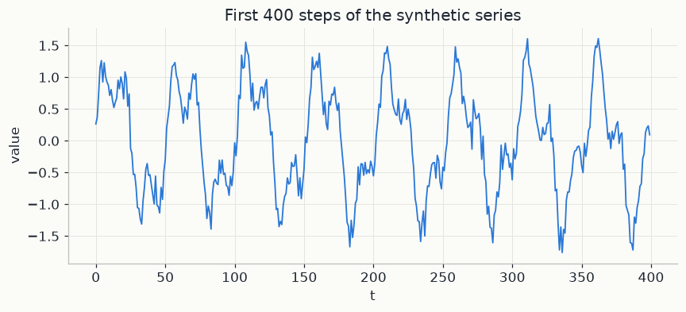
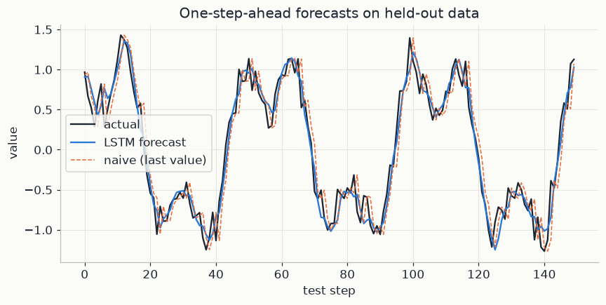

import os
os.environ["TF_CPP_MIN_LOG_LEVEL"] = "3"
os.environ["TF_ENABLE_ONEDNN_OPTS"] = "0"
import warnings
warnings.filterwarnings("ignore")
import numpy as np
import matplotlib.pyplot as plt
import tensorflow as tf
import mlutils
mlutils.set_style()
tf.get_logger().setLevel("ERROR")
tf.keras.utils.set_random_seed(0) # seeds Python, NumPy and TensorFlow together
tf.config.experimental.enable_op_determinism() # identical results on every run1. From one series to many training examples
A time series is a list of numbers measured at regular steps, y_1, y_2, \dots, y_T.
In this chapter each y_t is a single unitless number, roughly between -2 and 2,
and T = 2000; the code calls the series y. The task is one-step-ahead
forecasting: predict y_t from the values before it.
Most learning methods need a table of examples, each with a fixed-size input and a target. A sliding window of length L builds one: the input is the L most recent values and the target is the next value,
\mathbf{x}^{(t)} = (y_{t-L},\ \dots,\ y_{t-1}) \in \mathbb{R}^L, \qquad \text{target } y_t .
Sliding the window one step at a time gives T - L pairs. With L = 3 on the short series 3, 5, 4, 6, 7, 5:
| input window | target |
|---|---|
| (3, 5, 4) | 6 |
| (5, 4, 6) | 7 |
| (4, 6, 7) | 5 |
In the code L is window = 30, which gives 2000 - 30 = 1970 pairs: X_all has
shape 1970\times 30 and y_all holds the 1970 targets. Every input uses only values
from before its target. The first 80% of the pairs, in time order, are used for
training and the last 20% for testing, so the model is scored on a stretch of time it
has never seen.
The loss. For N targets with predictions \hat y_t, the mean squared error is
\text{MSE} = \frac1N\sum_{t} (\hat y_t - y_t)^2 .
Squaring makes every error count as positive and punishes large misses more than small ones. Among all forecasts that use the same information, the one with the smallest expected squared error is the conditional mean of y_t given that information. MSE is both the training loss and the test score in this chapter.
The baseline every forecast must beat. The persistence forecast says the next value equals the last one:
\hat y_t = y_{t-1} .
It needs no training, and for a series that changes little from one step to the next it is hard to beat. A model that does not beat it has learned nothing useful about how the series moves, however complex the model is.
For this series one can work out in advance what persistence will score. The series is a smooth signal s_t plus independent noise \varepsilon_t with standard deviation 0.15, so y_t = s_t + \varepsilon_t, and the persistence error is
y_{t-1} - y_t = (s_{t-1} - s_t) + (\varepsilon_{t-1} - \varepsilon_t) .
The two independent noise terms each have variance 0.15^2 = 0.0225, so noise alone gives persistence an MSE of about 2\times 0.0225 = 0.045. The change of the signal over one step adds about 0.025: a sine of amplitude A and period P changes by about 2\pi A/P times another sine per step, and a sine of amplitude B has mean square B^2/2, so the two main components give \tfrac12(2\pi/50)^2 + \tfrac12(\pi/17)^2 \approx 0.008 + 0.017. Persistence should therefore land near 0.07. A forecaster that knew s_t exactly would still face the fresh noise \varepsilon_t, which nothing can predict, so its MSE would be 0.0225. Any useful model must fall between these two numbers.
2. Recurrent networks and vanishing gradients
A window could be given to a dense network as 30 unrelated numbers. A recurrent neural network (RNN) instead reads the window in order, one value per step, and carries a summary of what it has read so far. Inside one window, write the inputs as x_1, \dots, x_L, so x_1 = y_{t-L} and x_L = y_{t-1}. The summary is the hidden state h_s \in \mathbb{R}^H, a vector of H numbers (H = 24 in the code). It starts at h_0 = 0 and is updated at every step s by
h_s = \tanh\big(W_h\,h_{s-1} + W_x\,x_s + b\big),
with W_h \in \mathbb{R}^{H\times H}, W_x \in \mathbb{R}^{H\times 1} and b \in \mathbb{R}^H. Read it as: the new memory is a squashed mix of the old memory and the new input. The same weights are used at every step, which is weight sharing over time. After the last step, a dense layer reads the forecast off the final state: \hat y_t = v^\top h_L + c, with v \in \mathbb{R}^H and a number c.
Why a plain RNN struggles to remember. Training needs the gradient of the loss with respect to the weights, and that requires knowing how the final state depends on earlier states. Take the smallest case, a scalar state h_s = \tanh(w\,h_{s-1} + u\,x_s). Using \tanh'(z) = 1 - \tanh^2(z), one step back multiplies the gradient by
\frac{\partial h_s}{\partial h_{s-1}} = w\,\big(1 - h_s^2\big) .
Going back k steps, the chain rule multiplies k such factors:
\frac{\partial h_L}{\partial h_{L-k}} = \prod_{s=L-k+1}^{L} w\,\big(1-h_s^2\big) .
A product of many factors behaves exponentially. If every factor is 0.9, then across the 29 steps of a 30-step window the product is 0.9^{29} \approx 0.047; across 50 steps it is 0.9^{50} \approx 0.005; across 100 steps, about 0.00003. If every factor is 1.1, then 1.1^{50} \approx 117. In the first case the gradient vanishes: what happened 50 steps back has almost no influence on the weight update, so long-range patterns cannot be learned. In the second it explodes and training becomes unstable. Because 1 - h_s^2 \le 1, and is close to 0 whenever the tanh saturates, vanishing is the more common failure. With vector states, w becomes the matrix W_h and the same effect acts along each of its directions.
3. The LSTM cell
The LSTM (Long Short-Term Memory) adds a second state, the cell state
c_s \in \mathbb{R}^H: a memory line that is updated by addition instead of being
squashed again at every step. Three gates control it. A gate is a vector of
numbers between 0 and 1, produced by the sigmoid \sigma(z) = 1/(1+e^{-z}), that
multiplies another vector entry by entry (written \odot): a 1 lets a value through,
a 0 blocks it. (This \sigma is the sigmoid function, not the sigma used for scaling
in the code.) At each step:
\begin{aligned}
f_s &= \sigma\big(W_f\,x_s + U_f\,h_{s-1} + b_f\big) && \text{forget gate}\\
i_s &= \sigma\big(W_i\,x_s + U_i\,h_{s-1} + b_i\big) && \text{input gate}\\
o_s &= \sigma\big(W_o\,x_s + U_o\,h_{s-1} + b_o\big) && \text{output gate}\\
\tilde c_s &= \tanh\big(W_c\,x_s + U_c\,h_{s-1} + b_c\big) && \text{candidate}\\
c_s &= f_s \odot c_{s-1} + i_s \odot \tilde c_s && \text{cell update}\\
h_s &= o_s \odot \tanh(c_s) && \text{output}
\end{aligned}
Each W is H\times 1 (it multiplies the scalar input), each U is H\times H, and each b has H entries. In plain words:
- Forget gate f_s: how much of each entry of the old memory c_{s-1} to keep.
- Candidate \tilde c_s: new content proposed from the current input and the previous output, with values in (-1, 1).
- Input gate i_s: how much of the candidate to write into memory.
- Output gate o_s: how much of the squashed memory to reveal as the output h_s, which is what the next step and the final dense layer see.
With H = 24 and a scalar input, the four blocks hold 4\cdot(24 + 24\cdot 24 + 24) = 2{,}496 parameters, and the dense output layer adds 24 + 1 = 25.
Why the gradient survives. Follow the memory line alone. From the cell update, the direct derivative is
\frac{\partial c_s}{\partial c_{s-1}} = f_s \quad \text{(entry by entry)},
so going back k steps along the cell state multiplies k forget gates (this ignores the smaller indirect paths through h_{s-1} inside the gates). The product contains no weight matrix and no tanh derivative, and the forget gate is learned. When the network needs to remember, it can hold f_s close to 1: with f_s = 0.99 at every step, 0.99^{50} \approx 0.61 of the gradient survives 50 steps, against 0.005 for the RNN factor 0.9 above. The key is the addition in c_s = f_s\odot c_{s-1} + i_s\odot\tilde c_s: new information is added to the memory rather than folded into it through a squashing function at every step.
4. One step of the cell, by hand
Take an LSTM with a single unit (H = 1), so every quantity is a number. Suppose the old memory is c_{s-1} = 2.0 and the four pre-activations (the expressions inside \sigma and \tanh) at this step are:
| quantity | pre-activation | function | value |
|---|---|---|---|
| forget gate f_s | 2.197 | \sigma | 0.9 |
| input gate i_s | 0 | \sigma | 0.5 |
| output gate o_s | 1.386 | \sigma | 0.8 |
| candidate \tilde c_s | 0.693 | \tanh | 0.6 |
The pre-activations are \ln 9, 0, \ln 4 and \ln 2, chosen so that the outputs are round: \sigma(\ln 9) = 1/(1 + 1/9) = 0.9, \sigma(\ln 4) = 1/(1+1/4) = 0.8 and \tanh(\ln 2) = (e^{2\ln 2} - 1)/(e^{2\ln 2} + 1) = (4-1)/(4+1) = 0.6. Then
c_s = f_s\,c_{s-1} + i_s\,\tilde c_s = 0.9\times 2.0 + 0.5\times 0.6 = 1.8 + 0.3 = 2.1,
h_s = o_s\,\tanh(c_s) = 0.8\times\tanh(2.1) \approx 0.8\times 0.970 = 0.776 .
The memory kept 90% of its old content and added half of the new proposal; the output reveals 80% of the squashed memory. Along the memory line, \partial c_s/\partial c_{s-1} = f_s = 0.9. That is the same factor as in the RNN example, with one difference: here the network chooses it. Raising the forget pre-activation from 2.197 to 4.6 gives f_s = \sigma(4.6) \approx 0.99, and the memory, together with its gradient, is carried almost unchanged from step to step.
In the code. X_all and y_all are the windowed pairs of section 1 with L = 30.
Inputs and targets are standardised as (value - mu) / sigma, using training
statistics only, and each window is reshaped to 30\times 1 so that the LSTM reads one
number x_s per step. The model is LSTM(24), which runs the six equations of section
3 with H = 24 and returns only the last output h_L, followed by Dense(1), which
computes \hat y_t = v^\top h_L + c. It is trained with loss="mse". The model works in
standardised units, where every error is divided by sigma, so its mean squared error
is multiplied by sigma**2 to return to the original units. Finally,
naive_pred = X_test[:, -1] is the persistence forecast \hat y_t = y_{t-1}: the last
value of each test window.
5. A synthetic sequence
Two sine waves at different periods, a slow drift, and noise — enough structure for a model to find, and enough noise that it can't predict perfectly. Real data (weather, sensor readings) usually looks like a messier version of exactly this.
t = np.arange(0, 2000)
y = (np.sin(2*np.pi*t/50) + 0.5*np.sin(2*np.pi*t/17) + 0.02*np.sin(2*np.pi*t/400)
+ np.random.normal(0, 0.15, size=t.shape)).astype("float32")
fig, ax = plt.subplots(figsize=(9, 3.5))
ax.plot(t[:400], y[:400], color=mlutils.BLUE, lw=1.2)
ax.set(xlabel="t", ylabel="value", title="First 400 steps of the synthetic series")[Text(0.5, 0, 't'), Text(0, 0.5, 'value'), Text(0.5, 1.0, 'First 400 steps of the synthetic series')]

6. Windowing: turning a sequence into (input, target) pairs
As in section 1, we slide a window of 30 past values across the series; the target is the very next value. This is exactly the same "honest windows, no peeking" idea as the Understanding Time Series course's chapter 04 — the window at time t may only see values up to t-1.
window = 30
X_all = np.stack([y[i:i+window] for i in range(len(y) - window)])
y_all = y[window:]
n_train = int(0.8 * len(X_all))
X_train, X_test = X_all[:n_train], X_all[n_train:]
y_train, y_test = y_all[:n_train], y_all[n_train:]
print(f"train windows: {X_train.shape}, test windows: {X_test.shape}")train windows: (1576, 30), test windows: (394, 30)
# scale using TRAINING statistics only, to avoid leaking test information
mu, sigma = X_train.mean(), X_train.std()
X_train_s = ((X_train - mu) / sigma)[..., np.newaxis]
X_test_s = ((X_test - mu) / sigma)[..., np.newaxis]
y_train_s = (y_train - mu) / sigma
y_test_s = (y_test - mu) / sigma7. The model and a naive baseline
The naive baseline just predicts "the next value equals the last observed value" — persistence. Any real model has to beat this to be worth its complexity.
model = tf.keras.Sequential([
tf.keras.layers.Input(shape=(window, 1)),
tf.keras.layers.LSTM(24),
tf.keras.layers.Dense(1),
])
model.compile(optimizer="adam", loss="mse")
history = model.fit(X_train_s, y_train_s, epochs=15, batch_size=32, validation_split=0.1, verbose=0)
print(f"final training loss: {history.history['loss'][-1]:.4f}, "
f"validation loss: {history.history['val_loss'][-1]:.4f}")final training loss: 0.0471, validation loss: 0.0423
pred_s = model.predict(X_test_s, verbose=0).flatten()
mse_lstm = float(np.mean((pred_s - y_test_s) ** 2)) * sigma**2 # back to original units
naive_pred = X_test[:, -1] # "next = last observed"
mse_naive = float(np.mean((naive_pred - y_test) ** 2))
print(f"LSTM test MSE: {mse_lstm:.4f}")
print(f"naive persistence test MSE: {mse_naive:.4f}")
print(f"LSTM is {mse_naive / mse_lstm:.2f}x better than the naive baseline")LSTM test MSE: 0.0300 naive persistence test MSE: 0.0693 LSTM is 2.31x better than the naive baseline
pred = pred_s * sigma + mu
fig, ax = plt.subplots(figsize=(9, 4))
show = 150
ax.plot(y_test[:show], color=mlutils.INK, lw=1.5, label="actual")
ax.plot(pred[:show], color=mlutils.BLUE, lw=1.5, label="LSTM forecast")
ax.plot(naive_pred[:show], color=mlutils.ORANGE, lw=1, ls="--", label="naive (last value)")
ax.set(xlabel="test step", ylabel="value", title="One-step-ahead forecasts on held-out data")
ax.legend()<matplotlib.legend.Legend at 0x25e8f7412b0>

The LSTM tracks the fast wiggle the naive baseline always lags by one step — it has learned the short-period sine component well enough to anticipate the turn, not just repeat the last value.
Exercises
Exercise 1: Window size
Retrain with window = 5 and window = 100. Which does better on test MSE? What
does too short a window fail to capture here, given the periods used to build y?
Solution
A window of 5 is shorter than even the fastest period (17 steps) and can't see enough of a cycle to extrapolate it; a much longer window (100) has enough context but takes longer to train and doesn't necessarily help further once the relevant periods are already covered.
Exercise 2: SimpleRNN vs. LSTM
Swap tf.keras.layers.LSTM(24) for tf.keras.layers.SimpleRNN(24) and retrain. Does
test MSE change much on a sequence this short? At what point (longer sequences, more
history required) would you expect the LSTM's gating to start mattering more?
Solution
On a short window (30 steps) a SimpleRNN often performs comparably to the LSTM — the vanishing-gradient problem LSTMs are designed to fix mainly bites on much longer sequences, where a plain RNN struggles to keep information from many steps back.
Key takeaways
- Windowing turns a single long sequence into supervised (input, target) pairs; the window may only look backward, never at data from after the target.
- An LSTM's gates let it learn what to carry forward and what to discard at each step, which is what makes it trainable on longer sequences than a plain RNN.
- Always compare against the naive "predict the last value" baseline — it's a surprisingly strong opponent, and the whole point of a model is to beat it.